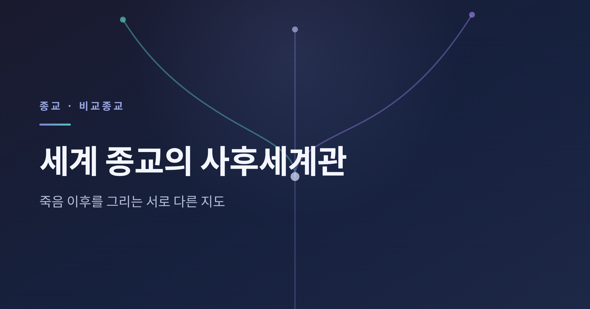
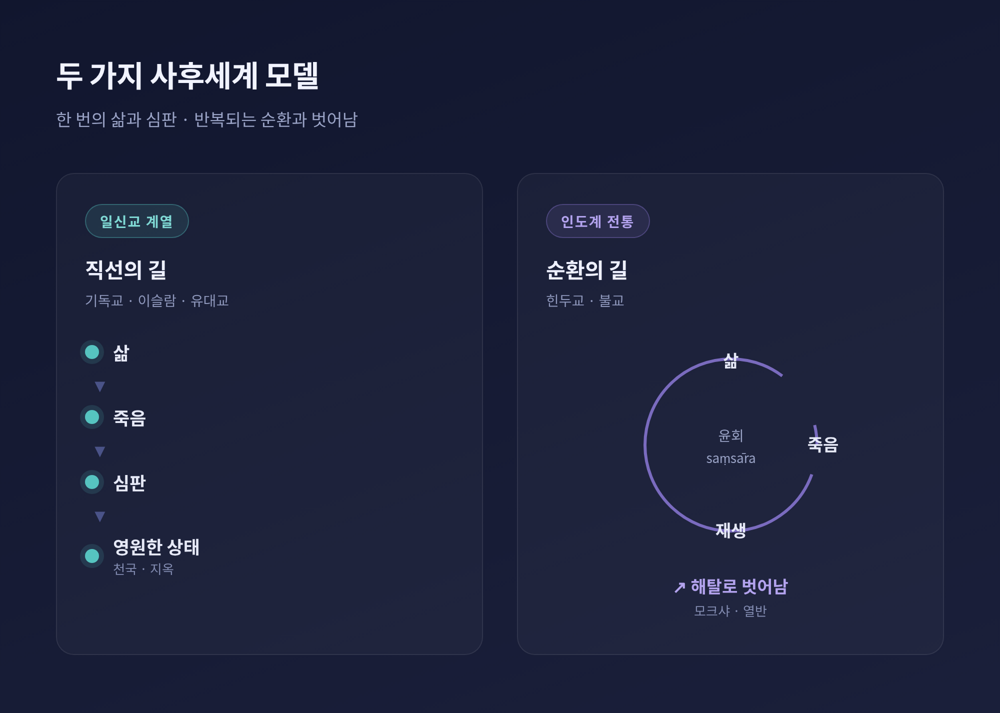
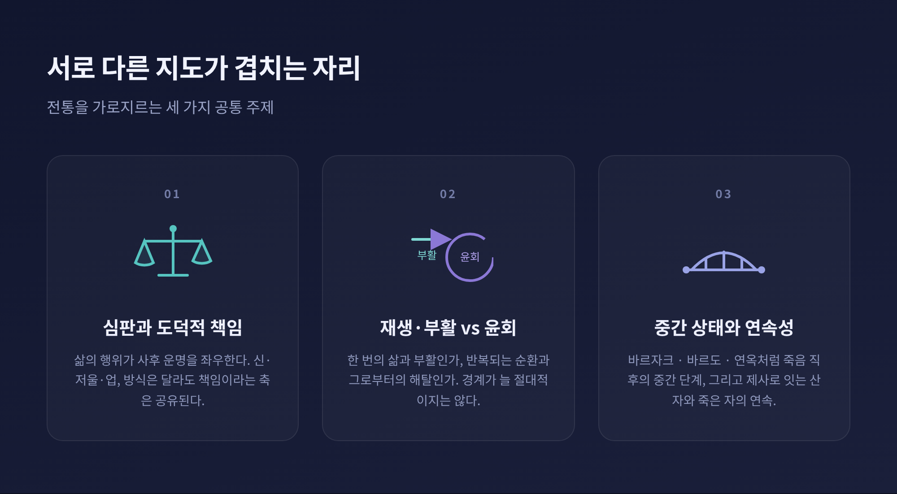
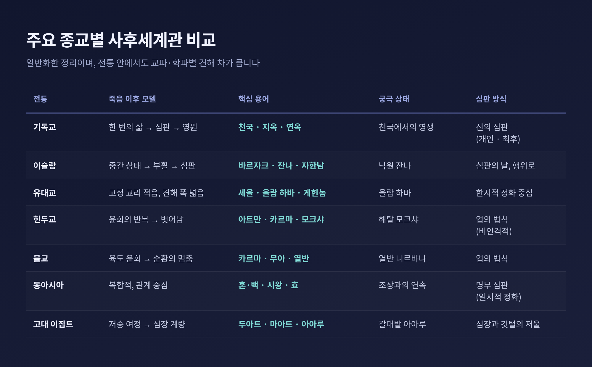

오늘은 세계 종교의 사후세계관을 정리해 보겠습니다. 죽음 이후를 두고 각 전통이 그려온 지도는 생각보다 다양합니다. 어느 쪽이 옳다는 판단 없이, 서로 다른 그림을 나란히 살펴보겠습니다.
먼저 큰 그림부터 말씀드립니다. 비교종교학에서는 사후세계관을 흔히 두 갈래로 나눕니다. 하나는 한 번의 삶 뒤에 심판과 영원한 상태가 이어진다고 보는 일신교 계열입니다. 다른 하나는 생사가 반복된다고 보는 인도계 전통입니다. 여기에 조상과 관계를 중시하는 동아시아 전통, 일찍부터 심판 모티프를 발전시킨 고대 문명이 더해집니다.
기독교, 이슬람, 유대교는 서아시아·지중해에서 자라난 전통입니다. 이 계열은 이생과 사후를 단절로 봅니다. 삶은 한 번이고, 죽음 뒤에 심판이 따른다는 구조입니다.
기독교는 대체로 천국(heaven)과 지옥(hell)을 말합니다. 다만 해석은 교파마다 갈립니다. 가톨릭은 천국에 들기 전 영혼이 정화되는 연옥(purgatory)을 가르칩니다. 개신교는 일반적으로 연옥을 인정하지 않고, 오직 믿음에 의한 구원을 강조합니다. 동방정교회는 신화(theosis)와 하느님의 자비를 중시하되 연옥 교리는 두지 않습니다. 심판의 시점을 두고도 견해가 나뉩니다. 죽는 즉시 결정된다는 쪽과, 후일의 최후심판 때 비로소 정해진다는 쪽이 함께 존재합니다.
이슬람의 내세관은 일련의 사건으로 이어집니다. 죽음 직후의 중간 상태인 바르자크(Barzakh)에서 시작해, 부활과 심판의 날을 거칩니다. 그 끝에 낙원 잔나(Jannah)와 지옥 자한남(Jahannam)이 놓입니다. 지상에서의 행위가 영원한 운명을 가르는 결정적 요인이라고 봅니다.
유대교는 결이 조금 다릅니다. 내세에 관한 고정된 교리가 거의 없고, 개인의 견해 폭이 넓습니다. 토라가 말하는 셰올(Sheol)은 죽은 뒤 내려가는 정적인 곳입니다. 후대의 올람 하바(Olam Ha-Ba)는 개인 영혼의 사후 세계를 뜻하기도, 메시아 이후의 공동체적 완성 세계를 뜻하기도 합니다. 게힌놈(Gehinnom)은 영원한 지옥이 아니라 한시적 정화의 장소로 이해됩니다.

인도계 전통은 출발점부터 다릅니다. 삶이 한 번이 아니라 반복된다고 전제합니다. 출생과 죽음과 재생이 끝없이 이어지는 순환을 윤회(saṃsāra)라 부릅니다.
힌두교는 영원한 영혼인 아트만(atman)을 전제합니다. 몸이 죽으면 영혼은 그 생에서 쌓은 업(karma)을 지니고 다음 몸으로 옮겨갑니다. 현생의 행위가 다음 존재의 조건을 결정한다는 것입니다. 궁극의 목표는 이 순환에서 벗어나는 해탈, 곧 모크샤(moksha)입니다. 참된 본성을 깨달아 욕망과 고통에서 벗어난 상태를 가리킵니다.
불교도 윤회와 업을 말합니다만, 핵심 강조점이 다릅니다. 깨닫지 못한 존재는 업에 이끌려 여섯 영역, 즉 육도 가운데 하나로 다시 태어난다고 봅니다. 그 순환을 멈추는 자리가 열반(Nirvana)입니다. 통찰을 통해 갈애가 소멸할 때 순환이 그칩니다. 힌두교와의 큰 차이는 영혼관에 있습니다. 불교는 고정불변의 영혼 실체보다 무아(anattā)를 강조합니다. 다만 윤회의 주체를 두고는 전통과 학파별로 해석이 갈리므로 단정은 어렵습니다. 티베트 불교 일부는 죽음과 재생 사이의 중간 상태인 바르도(bardo)를 상정하기도 합니다.
동아시아에서는 도교·불교·유교가 뒤섞여 복합적인 내세 관념을 이룹니다. 내세를 단일 교리로 규정하기보다 여러 생각이 공존합니다. 죽은 이의 영혼을 양의 혼(魂)과 음의 백(魄)으로 나누어 보기도 합니다. 명부(地獄)에서는 시왕(十王)이 영혼을 심판하되, 영원한 형벌이 아니라 일시적 정화의 성격을 띱니다. 유교는 하늘(天)을 영혼이 가는 장소라기보다 생명의 근본 원리로 이해합니다. 조상 숭배는 돌아가신 가족을 향한 효(孝)의 표현입니다. 여기서는 내세의 지형보다 산 자와 죽은 자의 관계에 무게가 실립니다.
고대 이집트는 일찍부터 또렷한 심판의 그림을 남겼습니다. 죽음은 끝이 아니라 저승 두아트(Duat)를 지나는 여정의 시작이었습니다. 그 끝에서 망자의 심장은 진리의 여신 마아트의 깃털과 저울에 달립니다. 심장이 깃털만큼 가벼우면 의로운 자로 인정받아 낙원 아아루(갈대밭)에 머뭅니다. 무거우면 괴물 암미트에게 심장을 먹혀 비존재에 이른다고 믿었습니다.

다른 듯 보이는 지도들도 겹치는 지점이 있습니다.
첫째는 도덕적 책임입니다. 거의 모든 전통이 삶의 행위가 사후 운명을 좌우한다고 봅니다. 일신교는 신을 심판자로, 이집트는 저울을, 인도계는 업이라는 비인격적 법칙을 둡니다. 방식은 달라도 책임이라는 축은 공유됩니다.
둘째는 재생과 윤회의 대비입니다. 서아시아 계열이 한 번의 삶과 부활을 말한다면, 인도계는 반복되는 윤회와 그로부터의 해탈을 말합니다. 다만 경계가 절대적이지는 않습니다. 유대교 카발라 전통은 영혼의 윤회인 길굴(gilgul) 개념을 품기도 합니다.
셋째는 중간 상태와 연속성입니다. 여러 전통에 죽음 직후의 중간 상태가 있습니다. 이슬람의 바르자크, 티베트 불교의 바르도, 가톨릭의 연옥, 유대교의 게힌놈이 그렇습니다. 동아시아의 제사는 산 자의 기억과 효를 통해 사후의 연속성을 잇습니다.

이렇게 큰 틀로 나누었습니다만, 한 가지 단서를 덧붙입니다. 위의 구분은 어디까지나 일반화입니다. 각 전통 안에도 견해의 폭이 넓고, 교파와 학파별 차이가 큽니다. 지도를 단순하게 그릴수록 가려지는 길도 많아집니다.
정리하면 이렇습니다. 세계 종교의 사후세계관은 죽음이라는 같은 물음 앞에 저마다 다른 지도를 그려왔습니다. 누군가는 한 번의 삶 뒤 영원을, 누군가는 끝없는 순환과 그로부터의 벗어남을 봅니다.
같은 죽음을 두고, 사람들은 이토록 다른 길을 그려왔다.
어느 지도가 맞느냐고 물으신다면, 이 글은 답을 정하지 않습니다. 다만 서로 다른 지도를 나란히 펼쳐 보는 일만으로도, 죽음을 바라보는 시야는 한층 넓어질 것입니다.